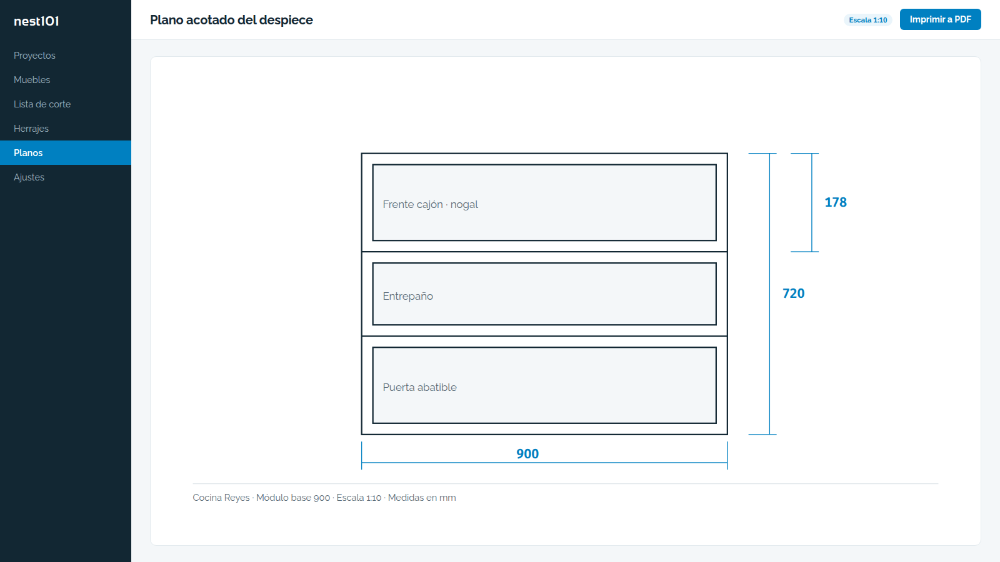
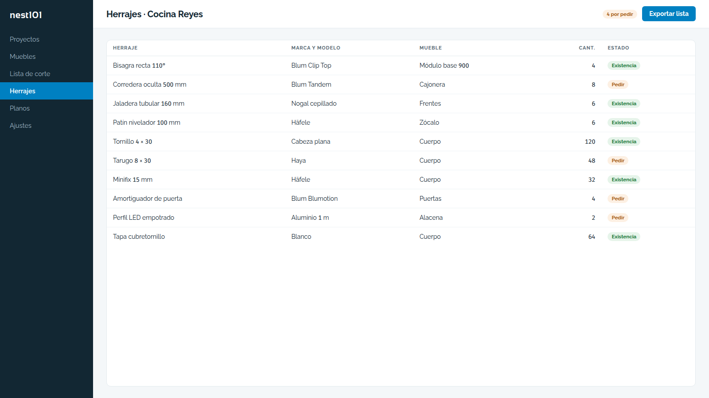
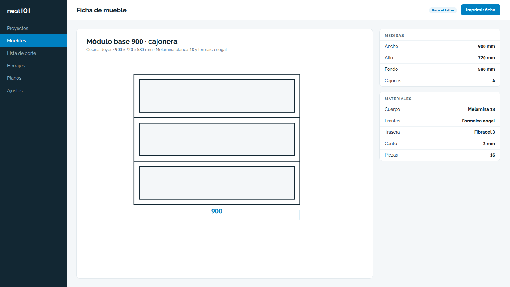
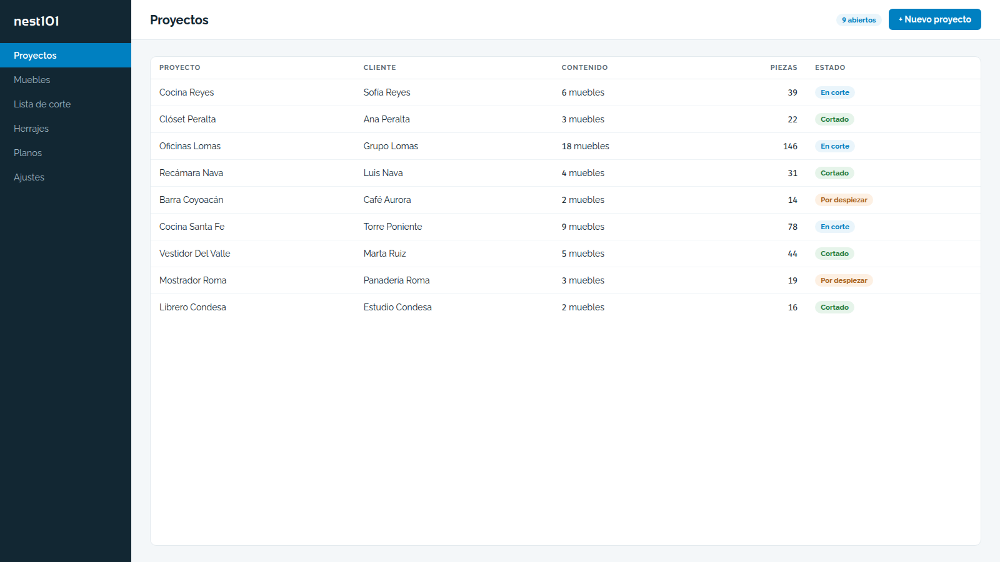

Toma el mueble y saca lo que el taller necesita para cortarlo: lista de corte, herrajes, fichas, planos acotados y Excel. Lo mismo sale como archivo .t101x, que draw101 abre para acotar los planos y quote101 lee para armar la cotización, así que el mueble no se vuelve a capturar en ninguno de los dos.
Pedir una demostración


